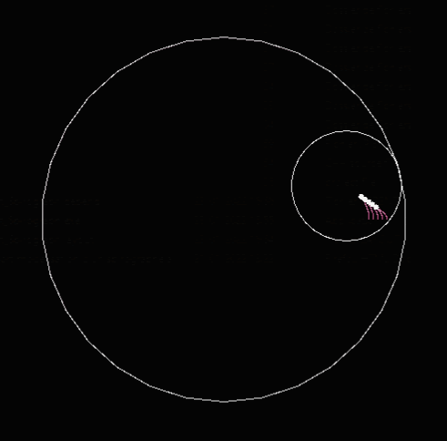
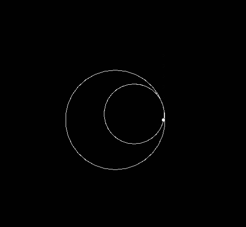

My first “game” #

As a team of two students, and over the course of six months, our goal was to make a program capable of visualizing spirographs using C++ and SFML
This program has some interactive features, although the actual building of the spirograph (the size and amount of discs) has to be done beforehand.
With this application, a user can setup their spirograph and watch it draw itself. all necessary information to use the program is detailed in the README.md file on the github repository.
4th year project
It was my first experience with any kind of visual output software, we used SFML to render the shapes on a black background.

My part of the work #
The math #
I was in charge of defining and applying the equations that rule over the circular movement of the assembly, I deepened my mathematical skills, especially in the trigonometry department.
Since we had no prior information about the math of spirographs, a big part of this project was the research to figure out a model that would both be mathematicaly correct, and produce aestheticaly pleasing shapes.
The class architecture #
In addition to the basic math principles that govern the spirographs movement, I also conceptualized and developped the main classes that represent the spirograph itself, this has improved my understanding of C++ and object oriented code in general.
Conclusion #
This project was a step up for me in terms of involvement, planning and teamwork. I am proud of the result, and I think that we achieved the goal we initially set.